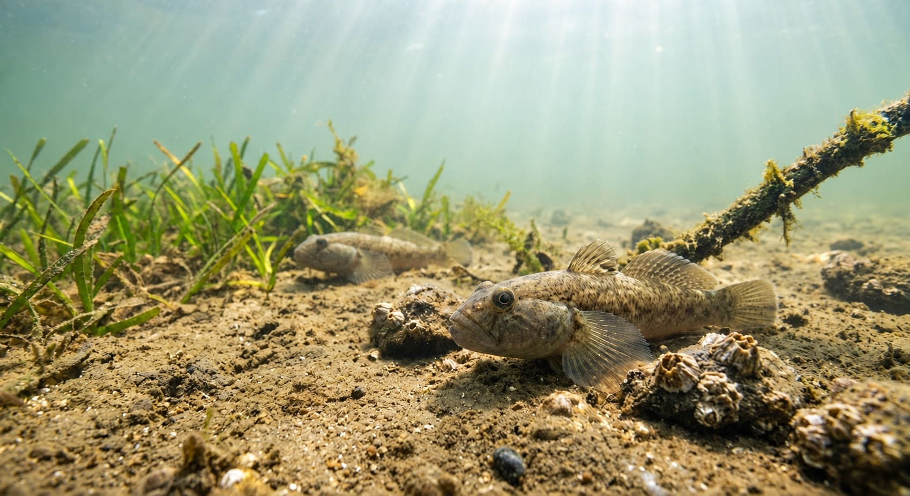
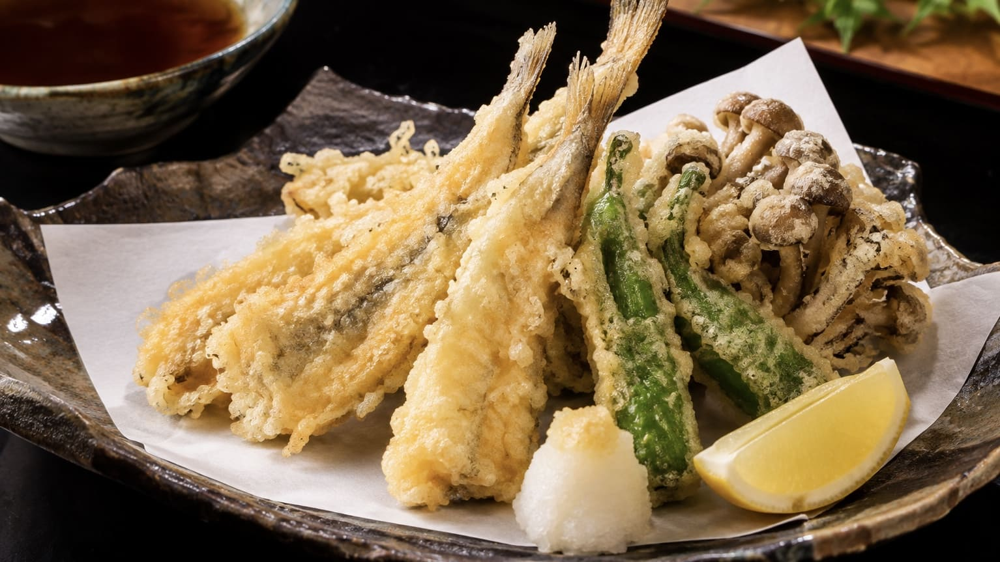

【完全攻略】手軽で奥深い江戸前の主役！ハゼ（マハゼ）の生態と釣り方ガイド

日本の沿岸や河口域に広く生息し、古くから「江戸前の釣り」の代表格として親しまれてきたハゼ。釣り人を魅了する主役はスズキ目ハゼ科の「マハゼ」です。 標準サイズは10～15cmほどですが、条件が良いと20cmを超える大型に成長することも珍しくありません。最大の特徴は、左右が一体化して吸盤状になった腹ビレです。この吸盤で川底や海底にピタッと張り付きながら生活する、典型的な「底生魚」となります。ハゼは底に卵をばら撒いて終わり、ではありません。冬から春にかけて、オスが砂泥底にトンネル状の複雑な巣穴を掘り、そこにメスが卵を産み付けます。その後はオスが巣に残り、孵化するまで卵を守り抜くという非常に面白い生態を持っています。
1. 季節とともに大移動！ハゼを追いかける四季の戦略
ハゼ釣りで最も面白いのは、季節（成長）に合わせて狙う場所が劇的に変わることです。春に生まれたハゼは驚異的なスピードで成長し、夏から秋にかけて釣りのハイシーズンを迎えます。
- 夏（デキハゼの季節）：7～8月頃の小型ハゼは「デキハゼ」と呼ばれます。この時期は水深わずか数十センチの超浅場や波打ち際まで群れで押し寄せてきます。遠くへ投げるより「足元を探る」のが大正解の季節で、サイトフィッシング（見えハゼ釣り）も楽しめます。
- 秋（ヒガンハゼの季節）：9～10月のお彼岸の時期には、10cm以上に成長した「ヒガンハゼ」が主役に。食欲旺盛で引きも強く、数も型も狙えるベストシーズンです。
- 冬（落ちハゼの季節）：水温が下がると、ハゼは産卵に備えて一斉に深場へ大移動します。この時期の脂が乗った大型ハゼは「落ちハゼ」「ケタハゼ」と呼ばれ、岸からののべ竿では届かなくなるため、ボートや遊漁船、遠投での投げ釣りがメインになります。
2. ハゼが好む一級ポイントと「潮」の関係
ハゼを狙うなら、完全な砂浜よりも「砂と泥が混ざった砂泥底」がベストです。エサとなるゴカイなどの底生生物が豊富だからです。 特に淡水と海水が混ざり合う河口付近や運河、干潟などの「汽水域」が絶好のポイントになります。
汽水域や河口は潮の干満の影響を強く受けます。ハゼは潮位の変化に合わせて移動するため、潮が動いている時間帯を狙うのが鉄則です。干潮時はやや深みのカケアガリ（斜面）へ移動し、満潮時は岸壁の足元スレスレまで寄ってくるので、潮に合わせて狙う距離を変えていきましょう。
3. ハゼ釣りの代表的な3つのスタイル
ハゼ釣りは多彩なアプローチが可能です。季節や釣り場に合わせて最適なものを選びましょう。
① ダイレクトな引きを味わう「ミャク釣り」
ウキを使わず、3～5mほどの「のべ竿（リールのない竿）」の先端から伝わるアタリを直接手元で感じる釣り方です。 オモリが底に着いたら少し糸を張り、時々竿を上下させて誘います。ハゼが食いつくと「ブルブルッ！」という小気味よい感触が手元までダイレクトに伝わるため、初心者やお子様でも最高に楽しめます。
② 見て楽しい「ウキ釣り（シモリウキ仕掛け）」
のべ竿を使った釣りでは、小型の玉ウキや棒ウキのほか、複数の小さなウキを連ねる「シモリ釣り」が非常に趣深く人気です。 ハゼは常に底にいるため、エサが底をはうようにウキ下を調整します。ハゼがエサをくわえると、水面にあるシモリウキの先端からスーッと斜め下へ連なって沈んでいくため、視覚的にもエキサイティングです。
③ 秋以降の定番「ちょい投げ釣り」
ハゼが少し深い場所へ移動する秋以降は、リール竿を使ったちょい投げ釣りが有利になります。 仕掛けを沖へキャストし、オモリが底に着いたらゆっくりと手前に引きずって誘います。ハゼは動くエサに猛烈に反応するため、置き竿で放置するより、少し引いて止める動作を繰り返した方が圧倒的に釣果が伸びます。
近年ルアーマンの間で大流行しているのが、小型のクランクベイトを使った「ハゼクランク（ハゼクラ）」です。ルアーを海底の砂泥にコツコツと当てながら巻いてくることで、ハゼの縄張り意識や好奇心を刺激してアタックさせます。
4. 釣果を倍増させる！現場の絶対ルール
- 絶対条件は「底を取る」こと：ハゼは底生魚なので、底から離れたエサには見向きもしません。ウキ釣りでもミャク釣りでも、必ずオモリやエサが底に触れている状態をキープしてください。
- エサの「タラシ」は短く！：アオイソメやゴカイ、ジャリメなどの虫エサを使いますが、ハゼは口が小さい魚です。ハリ先から垂れ下がるエサ（タラシ）を1cm以内（小型のデキハゼなら5mmでもOK）と短く切って付けるのが、確実に針掛かりさせる最大のコツです。※切ったエサを元の容器に戻すと他のイソメまで弱ってしまうため、必ず別の容器に分けましょう。
- アワセは「軽く」が鉄則：ブルブルッと来たら、ビックリして大きく竿をあおる必要はありません。手首を軽く返す程度でスッと竿を立てれば、十分に針掛かりします。もしハリを飲み込まれてしまったら、ハリスをピンと張って軽く引くとはずしやすくなります。
5. 釣ったハゼは極上の江戸前天ぷらで！
釣って楽しいハゼですが、食べても抜群に美味しいのが絶大な人気の理由です。クセのない上品で淡白な白身は、から揚げやフライ、甘露煮、南蛮漬けなど様々な料理に合います。

中でも、秋の良型ハゼで作る「ハゼの天ぷら」は、江戸前天ぷらの最高峰とも言われるフワフワの食感で絶品です。自分で釣った鮮度抜群のハゼをその日のうちに天ぷらにして味わう。これぞ釣り人の特権と言えるでしょう。
📍 関東の生息・釣果スポット
※マップ上の赤いドットが釣れるポイントです。